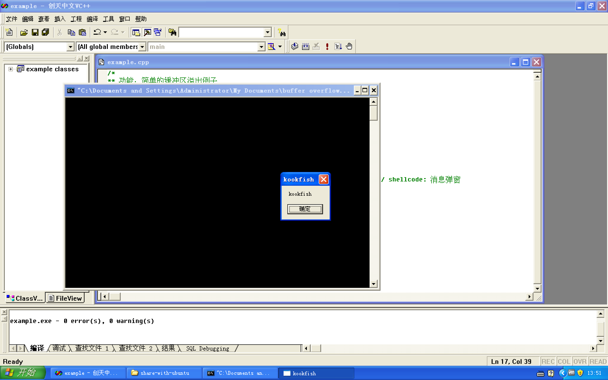

环境： Windows XP SP3, VC6.0
先上代码：
|
strcpy()函数不做越界检查，这段代码将EBP和EIP都覆盖掉。EIP将会别覆盖为0x7ffa4512，这个地址是一个通用的JMP ESP指令地址，适合Windows系统。JMP ESP将从栈顶开始执行，即原来的EIP下面开始。本示例中的shellcode会调用messagebox函数，每台机器上的message函数地址不一样，如果你想执行这段代码的话，需要将这个地址替换为自己的。messagebox的地址可以通过以下代码获得：
|
效果如下
